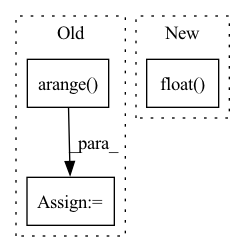

Pattern ID :7513

Before Change
return (center_widths[None, ...] > positions.abs()[..., None]).float()
def get_positional_features_gamma(positions, features, seq_len):
center_widths = 2 ** torch.arange(1, features + 1, device = positions.device).float()
center_widths = center_widths - 1
return (center_widths[None, ...] > positions.abs()[..., None]).float()
After Change
mean = mean[None, ...]
concentration = (mean / stddev) ** 2
rate = mean / stddev ** 2
probabilities = gamma_pdf(positions.float().abs()[..., None], concentration, rate)
probabilities = probabilities + eps
outputs = probabilities / torch.amax(probabilities)
return outputs
In pattern: SUPERPATTERN
Frequency: 4
Non-data size: 3
Instances
Fragment ID: 24797771
Project Name: lucidrains/enformer-pytorch
Commit Name: 0dc2ffafddd23e90339d922d2dd02ee5500ce5de
Time: 2021-10-27
Author: lucidrains@gmail.com
File Name: enformer_pytorch/enformer_pytorch.py
M Class Name: AnonimousClass
N Class Name: AnonimousClass
M Method Name: get_positional_features_gamma(6)
N Method Name: get_positional_features_gamma(3)
M Parent Class:
N Parent Class:
M File Name: enformer_pytorch/enformer_pytorch.py
N File Name: enformer_pytorch/enformer_pytorch.py
M Start Line: 46
M End Line: 49
N Start Line: 51
N End Line: 65
'>
Before Change
self.stride = self.img_dim / grid_size
self.anchor_vec = self.anchors / self.stride
self.anchor_wh = self.anchor_vec.view(1,self.num_anchors, 1, 1, 2)
yv, xv = torch.meshgrid([torch.arange(grid_size, device=get_device()), torch.arange(grid_size, device=get_device())])
self.grid = torch.stack((xv, yv), 2).view((1, 1, grid_size, grid_size, 2)).float()
self.grid1=meshgrid(grid_size,grid_size,requires_grad=False).view([1, 1, grid_size,grid_size,2])
// Calculate offsets for each grid
After Change
def compute_grid_offsets(self, grid_size):
self.register_buffer("grid", meshgrid(grid_size,grid_size,requires_grad=False).view((1, 1, grid_size, grid_size, 2)).float().detach())
//self.grid=meshgrid(grid_size,grid_size,requires_grad=False).view((1, 1, grid_size, grid_size, 2)).float().detach()
// Calculate offsets for each grid
'>
Fragment ID: 24797768
Project Name: allanyiin/yolov4
Commit Name: 97ce1d2fcabfc23a4e88bdb334cc027b83ed708e
Time: 2020-05-13
Author: allan@asiaminer.com.tw
File Name: pytorch_yolo.py
M Class Name: YoloLayer
N Class Name: YoloLayer
M Method Name: compute_grid_offsets(2)
N Method Name: compute_grid_offsets(2)
M Parent Class: Layer
N Parent Class: Layer
M File Name: pytorch_yolo.py
N File Name: pytorch_yolo.py
M Start Line: 113
M End Line: 118
N Start Line: 118
N End Line: 118
'>
Before Change
Make guided attention mask.
grid_x, grid_y = torch.meshgrid(torch.arange(olen), torch.arange(ilen))
grid_x, grid_y = grid_x.float().to(olen.device), grid_y.float().to(ilen.device)
return 1.0 - torch.exp(-((grid_y / ilen - grid_x / olen) ** 2) / (2 * (sigma ** 2)))
After Change
Make guided attention mask.
grid_x, grid_y = torch.meshgrid(torch.arange(olen, device=olen.device).float(), torch.arange(ilen, device=ilen.device).float())
return 1.0 - torch.exp(-((grid_y / ilen - grid_x / olen) ** 2) / (2 * (sigma ** 2)))
@staticmethod
'>
Fragment ID: 24797769
Project Name: digitalphonetics/ims-toucan
Commit Name: 684b0327eca5b0b403e63f22acd4641e47c92cd4
Time: 2021-10-18
Author: florian.lux@ims.uni-stuttgart.de
File Name: Layers/Attention.py
M Class Name: GuidedAttentionLoss
N Class Name: GuidedAttentionLoss
M Method Name: _make_guided_attention_mask(3)
N Method Name: _make_guided_attention_mask(3)
M Parent Class: torch.nn.Module
N Parent Class: torch.nn.Module
M File Name: Layers/Attention.py
N File Name: Layers/Attention.py
M Start Line: 270
M End Line: 271
N Start Line: 269
N End Line: 269
'>
Before Change
if not self.validation:
// Randomly mix two adjacent vertical lines.
indices = np.arange(psds.shape[2]) + np.random.uniform(0, 2, psds.shape[2])
psds = np.ascontiguousarray(psds[:, :, np.argsort(indices)])
// Randomly mix two adjacent horizontal lines.
After Change
return (
torch.from_numpy(_create_input_image_from_psds(psds)),
(strength > 0).float(),
)
'>
Fragment ID: 24797774
Project Name: affjljoo3581/g2net-detecting-continuous-gravitational-waves
Commit Name: 68b27f9a0239085773fa745a4ad1af56e9861e19
Time: 2023-01-01
Author: affjljoo3581@gmail.com
File Name: src_legacy/data.py
M Class Name: G2NetTrainDataset
N Class Name: G2NetTrainDataset
M Method Name: __getitem__(2)
N Method Name: __getitem__(2)
M Parent Class: Dataset
N Parent Class: Dataset
M File Name: src_legacy/data.py
N File Name: src_legacy/data.py
M Start Line: 53
M End Line: 88
N Start Line: 55
N End Line: 78